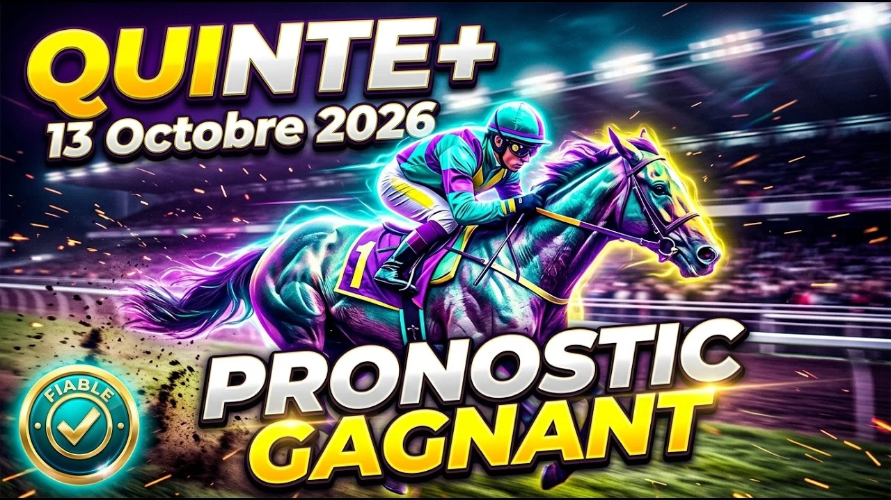

Ce mardi 13 octobre 2026, ParisLongchamp accueille le Prix de la Galerie des Variétés, un handicap divisé de plat réservé aux chevaux de 3 ans et plus. Seize partants, 1600 mètres sur la grande piste en gazon, corde à droite, et 50 900 euros à se partager. Le terrain annoncé souple fait figure d'arbitre : sur ce profil de piste, les chevaux préparés pour ce genre de sol ont toujours un coup d'avance.
Le Prix de la Galerie des Variétés est la première épreuve de la réunion 1 de ParisLongchamp, ce mardi 13 octobre 2026, avec un départ peu avant quatorze heures. Un handicap divisé sur 1600 mètres, grande piste en gazon, corde à droite, pour une allocation de 50 900 euros. Seize chevaux de 3 ans et plus sont au départ, et conformément au règlement, les 3 ans bénéficient d'un avantage au poids de 1,5 kilo.
Sur la grande piste de Longchamp, le terrain est annoncé souple, et ce seul mot change toute la physique de la course. On n'est plus sur un billard où le sabot rebondit : à chaque foulée, le cheval doit arracher ses membres du sol, ce qui sollicite l'endurance profonde plutôt que l'explosivité pure. Sur 1600 mètres dans ces conditions, l'effort n'a rien à voir avec une piste sèche, et les chevaux de tenue prennent l'avantage. C'est aussi ce qui place le poids au centre du jeu, plus encore que la forme brute.
Ma base, c'est le 3 Mr Fleurant. Ce hongre de 5 ans, entraîné par Antoine Watrigant, est en pleine possession de ses moyens : en huit sorties cette année, il n'a jamais terminé plus loin que la cinquième place, une régularité d'horloge. Il est monté par Mickaël Barzalona, un jockey qui affiche environ 54% de réussite sur le podium. Un bémol toutefois, et il est de taille : Mr Fleurant a hérité de la stalle 16, la toute dernière, à l'extrême extérieur. Sur ce parcours, le premier virage arrive vite, et s'il reste au large, il devra parcourir l'équivalent de 12 à 15 mètres de plus que les chevaux collés à la corde, ce qui équivaut à porter virtuellement 3 kilos de plomb supplémentaires. Tout le pari repose donc sur la science de course de Barzalona.
Le grand favori des pronostiqueurs, c'est le 14 Munchen. Ce hongre de 3 ans ne porte que 55,5 kilos, grâce à l'avantage de poids accordé aux jeunes, et le tirage au sort lui a offert la stalle 3, le long du rail, sans faire un mètre de trop. Son duo Demuro-Escuder affiche un taux de réussite de 41% dans ce type d'épreuve, et il cumule 79 points dans la synthèse des journaux. Mais cet âge oblige à la prudence : sur un terrain souple qui va s'apparenter à un vrai champ de bataille, ses os et ses tendons sont encore en plein développement, et son avantage de poids pourrait être pulvérisé par un manque de dureté au moment de la lutte finale. L'unanimité a parfois valeur de signal d'alarme.
Le 11 Pumalin Park est l'énigme du lot. Sous la houlette de Gérald Mosse, ce cheval a vu sa valeur chuter jusqu'à 40, et ses sorties récentes déçoivent. Pourtant, les spécialistes refusent de le rayer définitivement : son historique montre que s'il décide de livrer sa vraie valeur ce jour-là, sa capacité d'accélération laisse ses adversaires actuels sur place. C'est le pari sur la classe pure, celui qui peut faire sauter le quinté si l'étincelle revient.
Autre dossier passionnant : le 9 Bolkhov. Ce hongre de 4 ans, monté par Pierre-Charles Boudot et entraîné par Alessandro Botti, vient d'enchaîner trois handicaps consécutifs, un exploit athlétique pur. La mécanique du handicap l'a lourdement sanctionné : sa valeur est passée de 33,5 à 37,5, soit 4 kilos de pénalité. Sur le papier, sa forme est étincelante ; dans la boue, ces 4 kilos supplémentaires coûtent de plus en plus cher à mesure que la fatigue s'installe. On garde donc sa place dans le ticket, mais sans en faire une base.
Autour d'eux, trois profils complètent la sélection. Le 7 Boticelli, associé à Christophe Soumillon et préparé par M. Rulec, alterne les coups d'éclat et les sorties ternes, mais possède la pointe de vitesse pour finir fort si la course s'étire. Le 13 Lord of War, castré au printemps dernier, est monté par Maxime Guyon pour Nicolas Perret : cette transformation l'a rendu moins imprévisible et plus constant, ce qui colle au profil exigeant du jour. Enfin le 15 Hermes Wood, entraîné par Christophe Fey et confié à Théo Bachelot, évolue à 55 kilos, un poids plume qui peut faire la différence dans la phase finale sur ce terrain.
La véritable pépite de ce handicap, c'est le 16 Galord. À 7 ans, ce vétéran possède une carte de visite impressionnante : sa valeur a déjà été évaluée à 44,5, avant que l'usure et les contre-performances la fassent glisser jusqu'à 36, soit 8,5 kilos de moins qu'à son apogée. Résultat concret : il se présente aujourd'hui avec un poids plume de 55 kilos, le même que le jeune Munchen. Le tirage au sort lui a en plus offert la stalle 2, le long du rail, et ses derniers mètres sur le toboggan de Longchamp ont montré qu'il avait retrouvé l'envie de se battre. La classe d'un athlète de ce niveau ne s'évapore jamais complètement : quand les conditions redeviennent favorables, l'étincelle peut rejaillir brutalement. C'est notre coup de poker.
Derrière, le lot reste ouvert. Le 4 Aquitain et le 10 Wood Ming, ce dernier lui aussi récompensé par trois succès consécutifs puis lourdement pénalisé, conservent le potentiel pour intégrer des combinaisons gagnantes en cas de défaillance des favoris. Le 12 Duty, en valeur 37, est désigné comme une base solide par plusieurs titres spécialisés et reste une valeur sûre. Le 2 Jusearth Fal, le 1 Felix aux Ormes et le 5 Reve de Vallarsa auront besoin d'un terrain et d'un parcours à leur convenance pour s'exprimer pleinement. Plus bas dans la hiérarchie, le 6 Reverso et le 8 Montgaudry tenteront de faire parler leur expérience, mais ils partent avec un retard de forme à combler.
Au final, le terrain souple et le dosage du poids décideront. Mr Fleurant a la classe et le jockey pour surmonter sa stalle extérieure, Munchen l'insouciance de ses 3 ans, Pumalin Park sa pointe de vitesse, et Galord la faille du système de handicap. Entre la jeunesse effrontée et la résilience d'un vieux guerrier, notre logique penche pour la base portée par Barzalona, avec les profils de classe et de tenue juste derrière.
PRONOSTIC : 3 - 14 - 11 - 9 - 7 - 16 - 13 - 15
Regardez l'analyse complète sur YouTube :
▶️ Pronostic Quinté ParisLongchamp 13 octobre
Bonne chance sur vos combinaisons, et à bientôt pour la suite des courses.